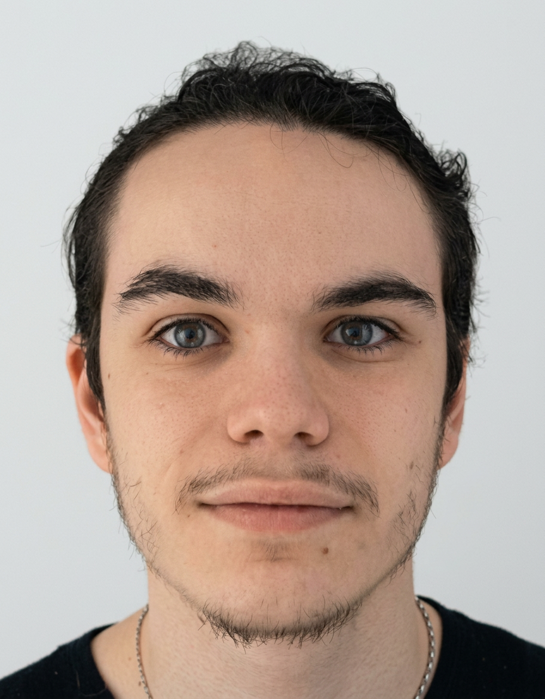

Je suis étudiant en deuxième année de BTS Services Informatiques aux Organisations, option SISR, au lycée Félix Le Dantec à Lannion. À travers ce portfolio, je présente mon parcours de formation, mes stages, mes projets et les différents éléments qui appuient ma préparation à l’épreuve orale E4.
Mon objectif est de valoriser des réalisations concrètes en administration système, infrastructure réseau et cybersécurité, en montrant pour chacune le besoin traité, le service rendu, les outils utilisés et les compétences du tableau mobilisées. Le site sert donc à la fois de support de présentation pour l’oral et de synthèse de mon parcours de professionnalisation.

VirtualBox, Proxmox, machines virtuelles, conteneurs, environnements de test.
SSH, HTTPS, FTP, XRDP, DNS, DHCP, NTP, WSUS, services Web.
Linux Debian, Ubuntu, Windows 10/11, environnement Cisco OS.
Switch, routeur, pare-feu, point d’accès Wi-Fi, client léger Axel 320.
C#, HTML, CSS, JavaScript, PHP.
Kali Linux, Nmap, Wireshark, OWASP, OpenVAS.
GitHub, Trello, documentation technique, suivi des tâches.
1 semaine (stage de 3ème)
Lycée Félix Le Dantec, Lannion
6 mois (vacances scolaires)
Développement du relationnel et de la communication
Lycée Félix Le Dantec, Lannion
1 mois (stage de BTS SIO 1ère année)
Accompagnement d'utilisateurs, prévention sur le phishing avec création d'un faux site de démonstration
Poursuite de la spécialisation en administration système, réseau, services et cybersécurité.
7 semaines (stage de BTS SIO 2ème année)
Pentest externe et interne, scripts d'automatisation, rapports de vulnérabilités et remédiation.
Plateforme de formation de l’ANSSI dédiée à la cybersécurité.
Formation sur le Règlement Général sur la Protection des Données.
Plateforme nationale d’évaluation des usages numériques.
Instance FreshRSS auto-hébergée sur AlwaysData : abonnements RSS centralisés et classement par catégories (General Tech News, Security Feeds, Systems & Networks).
Actualité tech générale, cybersécurité et alertes (ANSSI, CERT), systèmes, réseaux et Linux.
Ars Technica, Clubic, Numerama Tech, ANSSI Actualité, CERT-FR, ZDNet FR, Le Monde Informatique, LinuxFr.org, ZDNet Linux.
| Élément | Type | Compétences du tableau associées | Document |
|---|---|---|---|
| Atelier de professionalisation 1ère Année : EGNARO | Projet | Gérer le patrimoine informatiqueDévelopper la présence en ligne de l’organisationTravailler en mode projetMettre à disposition des utilisateurs un service informatiqueOrganiser son développement professionnel | Schéma et vue d’ensemble du projet EGNARO. Ouvrir |
| Atelier de professionalisation 2ème Année : GSB | Projet | Gérer le patrimoine informatiqueRépondre aux incidents et aux demandes d’assistance et d’évolutionTravailler en mode projetMettre à disposition des utilisateurs un service informatiqueOrganiser son développement professionnel | Schéma de l’infrastructure et support du projet GSB. Ouvrir |
| Stage Microtel : Faux site de démonstration phishing | Projet / stage | Répondre aux incidents et aux demandes d’assistance et d’évolutionMettre à disposition des utilisateurs un service informatiqueTravailler en mode projetOrganiser son développement professionnel | Vidéo de démonstration du faux site de phishing. Ouvrir |
| Stage ISITIX : Pentest et remédiation | Projet / stage | Gérer le patrimoine informatiqueRépondre aux incidents et aux demandes d’assistance et d’évolutionMettre à disposition des utilisateurs un service informatiqueTravailler en mode projetOrganiser son développement professionnel | Synthèse du stage ISITIX (pentest, scripts, remédiation, rapports). Ouvrir |
| SecNum | Certification | Gérer le patrimoine informatiqueOrganiser son développement professionnel | Attestation de réussite de la certification SecNum. Ouvrir |
| RGPD | Certification | Gérer le patrimoine informatiqueOrganiser son développement professionnel | Attestation liée à la sensibilisation au RGPD. Ouvrir |
| PIX | Certification | Organiser son développement professionnel | Résultat ou attestation de la certification PIX. Ouvrir |
| Veille technologique | Démarche | Organiser son développement professionnel | Veille via FreshRSS (flux classés par catégories). Voir la sectionFreshRSS |
| Réalisations personnelles | Documentation | Gérer le patrimoine informatiqueTravailler en mode projetOrganiser son développement professionnel | Angry IP Scanner, Robin OSINT, synthèse « Ethical Hacker gadgets » Voir la sectiondocsperso |
Le tableau de compétences officiel reste le document de référence de synthèse pour l’oral.
Ouvrir le tableauTéléphone: 06 95 65 64 28
Email: srafferty.ledantec@gmail.com
Adresse: 5 rue Courbe, 22300 Lannion